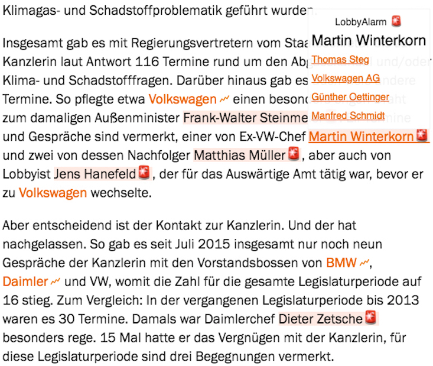

Zu den hervorgehoben Personen kann man per Hover die Artikel listen, in denen sie erwähnt werden. Bis jetzt
gibt es als Datengrundlage nur die LobbyPedia. In Zukunft sollen auch andere
unstruktiere Datenquellen wie z.B. Artikel von Zeit Online
und Spiegel Online zum Thema Lobbyismus hinzugefügt werden. So erhält man beim Lesen Kontextinformationen zu
lobbyierenden Personen. Im Gegensatz zu vorherigen Plugins geht es nicht um reine Zahlen, sondern man kann sich
über die konreten Vorfälle informieren.
Über Ideen oder Kritik per E-Mail freue ich mich immer: hi@jfilter.de.
Vorschaubild

Personen, die in der LobbyPedia auftauchen werden farblich markiert. Wenn man
mit dem Mauszeiger über eine Erwähnung fährt, erhält man die verlinkten Seiten. Hier im Bild z.B. von Martin
Winterkorn.